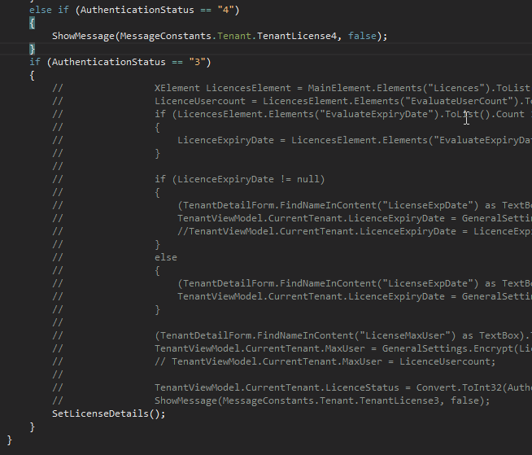
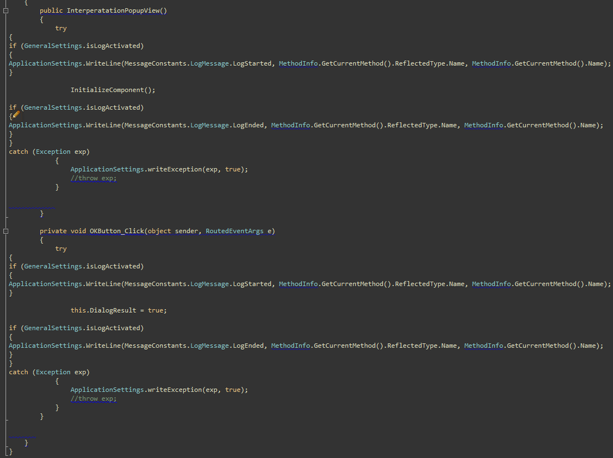

Qualtrak Solution Ltd. {LSD} / UXPassion {SD}
Any fool can write code that a computer can understand. Good programmers write code that humans can understand.
Martin Fowler - Refactoring: Improving the Design of Existing Code, 1999
The only true value of any code is its readability!
Discipline of writing consistent and readable code is the best virtue developer/team can have.
Kornelije Sajler
Roy: [singing] We don't need no education.
Moss: Yes you do. You've just used a double negative.
The IT Crowd, The Red Door [1.4]
Stick to Don't Repeat Yourself (DRY) and minimize the duplication of code and refactor it afterwards.
Keep code clean of all commented code, especially if it is a left-over.
Avoid commenting code inline, better write test with meaningful test name.
When you feel the need to write a comment, first try to refactor the code so that any comment becomes superfluous.
Martin Fowler - Refactoring: Improving the Design of Existing Code, 1999
Try to give meaningful names to classes, methods and variables no matter how long it will be.
Especially give meaningful names for all publicly available interfaces (e.g. REST API).
Try to write methods below 10 LOC and avoid write methods longer than 40 LOC.
Especially if it contains lots of conditional statements, better refactor it to more properly named methods.
Try to write classes below 100 LOC.
80 character per LOC is standard - punch cards, 80x24 Teriminal
80 - 120 is good
Always clear all comments when work is done no matter if it is yours or not.
Always remove unused classes, methods and fields when work is done.
Über WTF Code?!
Do not use #Region for hiding the code.
Better is to refactor to method or move the code to the end of the class (Fields & Properties).
Or use VS keys [Ctrl+A [Ctrl+M, Ctrl+M]] that will collapse whole document.
this keyword for all members within a current Class and those from inherited Class(es).
All private fields should start with underscore as:
private bool _isGood
Use Interfaces for mostly everything, or use Abstract Classes when appropriate.
Avoid inheritance from normal Class, inherit from Abstract Class.
Avoid deeply nested inheritance, the one level of inheritance should be preferable.
Use Dependency Injection (DI) / Inversion of Control (IoC) in all cases and avoid new keyword for creating the Object(s).
Prefer constructor injection.
Make injected parameters as read-only fields.
Everything that is instantiated in constructor (and needed elsewhere) make as read-only fields.
When using code snippets from Web eg. StackOverflow, MSDN, please do not just copy/paste from it.
Reformat it, change it to your standard before commiting the code to your repository!
Great tool, for easier coding, completion and conventions.
Power vs. Responsibility
Great tool, coding conventions on steroids.
Created by Microsoft employee, but it is not Microsoft product.
Can be annoying, there are really, really lots of conventions.
Compatible with R#.
Naming Patterns/Conventions
Setting up coding standards with R# and StyleCop
Project Patterns
Solution Architecture
Made with reveal.js
HTML and Markdown
Presentation available: